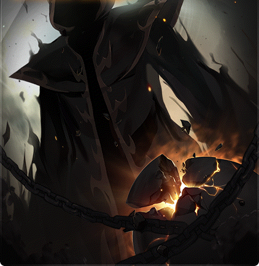

Checked-in boss knowledge
Black MageCHAMPION
Union Champion mission · Rank S
Rank S trial
- BLotus
- S · nowBlack Mage
- SSChosen Seren
- SSSGatekeeper Kalos
- Needs A Rank A champion
- Solo
- 20-minute limit
- Practice Mode clears count
Four phases of curse management: never take white and black hits within 6 s, solve the full-map checks by position, then hold the right Phase 4 colour.
- Boss level
- 260
- entry 260
- Party
- Solo
Champion notes
- S insignia+5% Boss Damage for every character. Hard Black Mage solo in Champion Mode (Champion Evaluation Match).
- Practice ModeClears count and add Hamcelot's Protection: 25% less damage taken.
- Hamcelot's TrialFinal Damage −25% in this Champion trial.
- 5th champion slotIn KMS it needs four Rank S champions, i.e. four Hard Black Mage solos.
Overview
Curses · 6 s each
- Creation (white): heal-over-time, burning aura−10% damage, against you
- Destruction (black): +15% damage taken, no potions+10% damage, in your favour
- Opposite curse while one is active−1 life · +50% HP hit, against you
Crossing curses also seals skills for 5 s.
P2 full-map lasers
- Far leftleft hand · red
- Under himboth hands
- Far rightright hand · purple
Watch his touch knockback under him.
Arcane Force
- Entry1320
- +10% final damage1452, in your favour
- +30% final damage1716, in your favour
- +50% final damage1980, in your favour
Core
- Two cursesHits apply white Creation or black Destruction for 6 s; taking the other while one is active costs a life.
- Origin binds onlyFrom Phase 2, only Origin skills bind him; normal binds still work on the Phase 1 knights.
Danger
- Curse crossingCosts a life without dying; the main way runs fail.
- Instant killsMisplaced in a full-map attack or wall spawn means death. Red Lightning is near-lethal, lethal under Destruction.
- Hidden handA Phase 2 Origin bind can hide the hand charging the full-map lasers; know the timer.
- Phase 3 chainsPush, pull and lasers chain curses; stop attacking at pink lasers, no double-jumps near him.
- Phase 4 drainsBullets and explosions take most lives, and nobody sees your mistakes.
Tips
- Check your curseBefore any intentional hit.
- Knights overlapPhase 1: bind and burst on overlap; their dive makes them briefly untargetable.
- Default to DestructionPhase 4 Black State: immune to black attacks, and hits give Creation, so potions still work. Swap only for pillars.
- Break the EggBasic-attack the Egg of the Beginning for rewards; the clear counts on the final kill.
Phases
Phase 1
two knights
- Two knights Aion of Creation (white) and Yaldabaoth of Destruction (black) share one HP bar.
- Closing walls They close in from the edges and spawning on you is lethal; avoid corners.
- Red Lightning Cages you for 15 s.
- Knights overlap Bind and burst when both overlap; their dive makes them briefly untargetable.
Phase 2
full-map lasers
- Chain volleys Dodge these first.
- Full-map lasers Stand in the safe spot indicated by his charging hand (see P2 full-map lasers).
- Hidden hand An Origin bind can hide which hand charges the full-map lasers; know the timer.
- Invincibility An i-frame can cover the full-map lasers if you have checked it lasts long enough; the ~10 s / ends ~2 s early figures are unverified.
Phase 3
shield bubble
- Shield bubble Stay inside it; outside you deal half damage.
- Ultimates White snowfall: under a platform. Floor vortex: on one, ideally the farthest.
- Push Crouch to avoid it.
- Chains Push, pull and lasers chain curses; stop attacking at pink lasers and don't double-jump near him.
Phase 4
pick a state
- Hidden party Party members are hidden.
- Pick a state Black (Destruction): hits give Creation, safer and slower. White (Creation): hits give Destruction, faster and riskier. Harvest key swaps.
- Pillar check Every 30 s, wrong colour dies; then he regains a barrier.
- Bullets and explosions They take most lives here, and nobody can see your mistakes.
- Burst on the barrier Buff ~3 s before a pillar check and burst on the fresh barrier; between bursts, just survive.
Strategies
Options, not orders: each trades risk against the damage it needs.
P4 burst only
- Risk
- Low
- Damage need
- Medium
- When
- Ordinary Hard with enough damage to clear within 20 minutes using bursts alone
- Payoff
- Damage lands on fresh barriers while the rest of the phase is spent surviving
- Between bursts, sustained damage is less productive because the barrier refills after each 30s pillar check, so you may stop attacking to survive; this is a survival choice, not a rule.
- Start buffs about 3s before a pillar check and burst on the fresh barrier.
- Four pillar checks are roughly one 2-minute burst cycle; between bursts, just survive.
P2 laser iframe
- Risk
- Low
- Damage need
- Medium
- When
- Any difficulty, with an i-frame you have checked covers the whole Phase 2 full-map attack
- Payoff
- Turns the Phase 2 full-map check into a free damage window
- Save the invincibility for the Phase 2 full-map lasers (or a Phase 3 ultimate) and keep attacking through it.
- The guide's ~10s length and ~2s early end are unverified; test your own class's coverage and know the safe spot as the fallback.
P4 black: safer
- Risk
- Low
- Damage need
- High
- When
- Phase 4, for a safer clear
- Payoff
- Hits give only the Creation curse, so healing and potions stay available and mistakes are punished less; its -10% damage makes the phase slower.
- Pick Destruction (Black) State with the Harvest key as Phase 4 starts.
- Dodge white attacks; a hit gives Creation (heal-over-time, -10% damage), so potions stay usable.
- Swap only for pillar checks, then return to Black; check your current curse before any swap.
- On Extreme the game sets your state at random every 30s, so Black cannot simply be held there.
P4 white: more damage
- Risk
- High
- Damage need
- Medium
- When
- Phase 4, for a faster clear when you can dodge cleanly
- Payoff
- Can be faster, but the damage bonus only comes from taking a hit for the Destruction curse, which also blocks potions and adds 15% damage taken.
- Pick Creation (White) State with the Harvest key as Phase 4 starts.
- Dodge black attacks; a hit gives Destruction (+10% damage, +15% damage taken, no potions).
- Swap only for pillar checks, then return to White; check your current curse before any swap.
- The +10% figure is the KMS/GMS value; on Extreme the state is set at random every 30s.
Notes
- Monthly clearHard and Extreme share one clear per month.
- MapleSEA changesv244 stopped the Phase 3 ultimate overlapping absorption, v246 dropped the entry item, v249 cut two Phase 2-3 patterns.
- HP estimatesOverdrive HP is estimated from the published KMS reductions.
Sources
- Official 6
- Guide 3
- Wiki 1
- Tool 1
- MapleStory Wiki - Black Mage/Monster
- MapleSEA v221 patch notes 2
- MapleSEA v214 patch notes
- MapleSEA v249 patch notes
- KMS 1.2.416 OVERDRIVE patch notes
- DigitalTQ - MapleStory Black Mage guide
- Inven - Black Mage solo guide
- Dexless - Black Mage boss guide and Genesis weapons
- MapleTools - Black Mage
- MapleSEA v243 NEXT II patch notes (Union Champion)
- KMS official guide - Union Champion
Our own paraphrase of these sources; the authors are credited above.